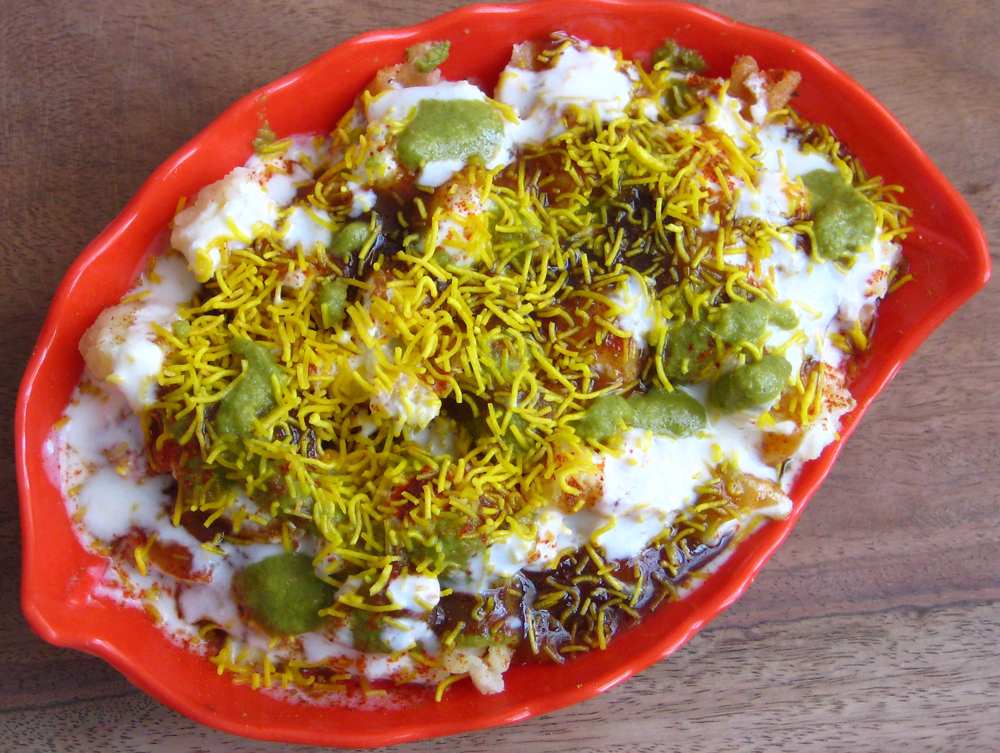

Close
Papri Chaat

What is Papri Chaat?
Papri chaat is a popular traditional street food from India. This dish is typically a sweet, sour and tangy with a creamy & crunchy texture. Based off your selections we think that this dish is a perfect fit for you! You can find this dish locally at the restaurents listed below.
Restaurant Recommendation
Sula Indian, Vij's, Indian Roti Kitchen, House of Dosa